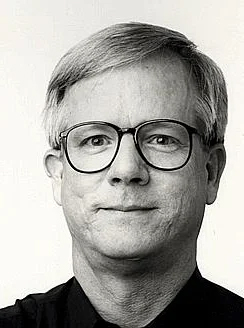

Питер Нортон
30 лет назад один молодой человек купил новый компьютер. А поскольку он раньше серьезно увлекался буддизмом, то решил написать одну статью для научного журнала. Когда статья была уже готова, молодой человек решил прерваться и выпить кофе. Он уже готов был встать из-за стола, но сделал неловкое движение и.. файл со статьей, результат многодневной работы был удален…
Он начал исследовать диск компьютера и выяснять, нельзя ли хоть что-то сделать в такой ситуации и возможно ли восстановление информации на компьютере? Вскоре труды молодого человека увенчались успехом. Он выяснил, что в действительности удаленный с диска файл на самом деле вовсе не удаляется, а только помечается особым образом. А впоследствии на его место могут быть записаны другие файлы – вот и все. Это натолкнуло молодого человека на одну идею: написать программу, которая просто восстановит метку файла - и он снова появится на диске.
Спустя всего два месяца молодой человек основал компьютерную фирму, которая стала производить и продавать программы для восстановления данных. Возможно, вы слышали об этом молодом человеке. Его имя Питер Нортон (Peter Norton).
Спустя всего 8 лет, в 1990 году основанная им компания Peter Norton Computing была куплена компанией Symantec за 70 миллионов долларов. К этому времени бренд Norton стал одним из наиболее популярных в компьютерном мире брендов.
С тех пор минуло уже 30 лет и программное обеспечение для персональных компьютеров ушло далеко вперед. Однако проблема утраты информации в результате технических сбоев и, соответственно, восстановления данных на сегодня актуальная, как никогда. По данным американского аналитического центра Pew Internet and American Life, на земле из-за поломки техники или ошибочных действий люди теряют 18,47 терабайт информации каждую минуту (1 терабайт = 1024 гигабайта). С другой стороны, аналитики подсчитали, что ежегодный оборот мировой индустрии восстановления утраченных данных в 2011 году превысил уровень 3,6 млрд. долларов!
Разумеется, теперь технология восстановления данных существенно отличается от того, чем в свое время пользовался Питер Нортон! Сегодня восстановление данных представляет из себя целую индустрию, в которой трудятся тысячи специалистов высочайшего класса!
Причем за прошедшие 30 лет в этой области было сделано немало открытий и технических усовершенствований. Современные специалисты по восстановлению информации умеют возвращать к жизни утраченные файлы даже в случае, если сам носитель безнадежно испорчен!